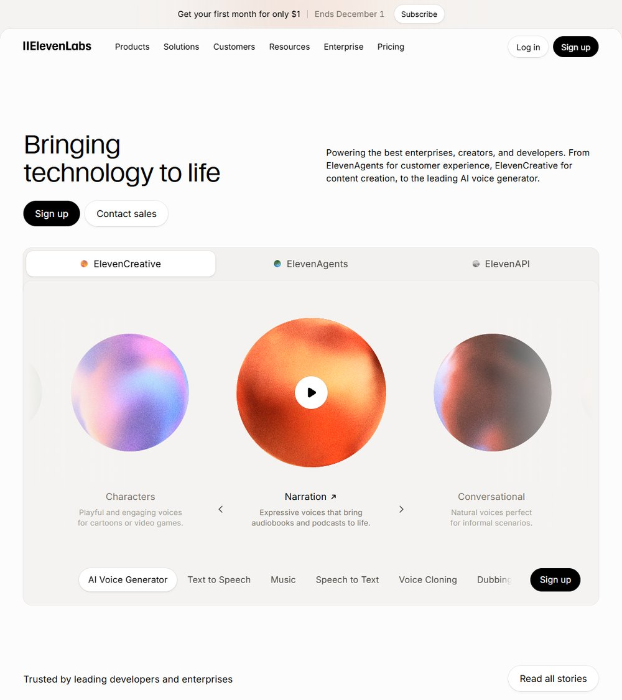

Twomi（AIアバター）の使い方2026｜無料で試せる範囲と注意点

この記事の前提：ここに書かれている内容は、2026年11月27日時点で公開されているTwomi 公式サイト、公式ヘルプセンター、資金決済法に基づく表記、および公式のアップデート記事をもとに整理したものです。当サイトは実際に長期利用した経験はないため、体験談ではなく公開情報の整理として読んでください。アプリ内の価格や仕様は端末・時期によって変わるため、購入前にストア表示を確認してください。
Twomiとはどんなアプリか
2026年春に登場した、基本無料のスマートフォンアプリです。ジャンルは「AIアバター×SNS×ライブ配信」。人間の配信者ではなく、AIのキャラクターが動いてしゃべる配信を見て、コメントで割り込める点が特徴とされています。Google Playでは1万ダウンロードを超え、評価は4.8前後と案内されることもありますが、これは確認時点の数値であり変動します。ストア上の開発元表記はiOSとAndroidで異なるため、アイコンとアプリ名で確認するのが安心です。
運営が打ち出しているのは「AIを使う」ではなく「AIと出会う」という考え方です。質問を考えてから開くチャットAIと違い、動画を流し見しているうちに気になるキャラクターが見つかり、そのまま話しかけられます。公式サイトでは「見る（WATCH）→興味を持つ（INTEREST）→コメントする→Jump Inで参加→話す（TALK）→学ぶ（LEARN）→成長する（GROW）」という段階が示されています。見るだけでも成立する設計なので、SNSの延長で気軽に触れられます。
料金とクレジットの仕組み（2026年11月確認）
アプリ自体は無料でインストールできますが、アバター作成や動画生成には「クレジット」を消費します。公式ヘルプと資金決済法に基づく表記に記載されている内容は次のとおりです。
| プラン | 料金（税込） | 毎月のクレジット | 備考 |
|---|---|---|---|
| Free（未課金） | 0円 | 4クレジット | 動画閲覧は無料。クレジットは使いどころを選ぶ必要があります |
| Twomi Standard | 980円／月 | 60クレジット | 16歳未満はこのプランのみ利用可 |
| Twomi Premium | 15,000円／月 | 200クレジット | 上位プラン。購入上限は18歳以上で制限なし |
クレジットの消費量は用途ごとに決まっています。アバター作成が2、衣装変更が2、動画生成（ホーム動画）が4、ライブ配信作成が時間帯によって3〜18（10分で3、30分で6、60分で10、120分で18）、カットイン（ライブ配信へのコメント参加）が1クレジットです。つまり無料の4クレジットなら「アバター1体＋カットイン2回」程度が現実的な配分になります。クレジットの個別購入（都度課金）はできず、サブスクリプションで毎月付与される仕組みです。
参考までに、A8.net で公開されている本案件の成果条件は次のとおりです。当サイトは現在この案件のアフィリエイトリンクを取得していないため、公開情報の記録として掲載しています。
| 成果の種類 | 公開されている報酬の目安 | 備考 |
|---|---|---|
| 新規インストール完了 | 300円 | A8.net の公開情報。当サイトは未取得 |
| 参考指標 | EPC 46.62／確定率 93.36% | 管理画面表示値。当サイトの実績ではありません |
クレジットの有効期限・購入上限について
公式ヘルプのクレジット解説記事には「無料ユーザーに対し、月に4クレジットが付与され、月末に失効する（繰り越しはない）」と記載されています。一方、資金決済法に基づく表記には「有効期限はございません。ただし、利用規約に基づくアカウント削除時およびサブスクリプションの解約・期限切れ時は未使用クレジットが失効する」とあります。公式ページ間で表記に差があるため、無料分は月末に消える前提で使い切るのが安全です。最新の取り扱いはアプリ内の設定画面とヘルプで確認してください。
購入上限は年齢によって異なります。16歳未満は月5,000円まで（Twomi Standardのみ）、16歳以上18歳未満は月20,000円まで、18歳以上は制限なしです。年齢確認はApple IDやGoogleアカウントの登録情報に基づきます。保有できるクレジットは有償・無償それぞれ999個までとされています。クレジットは購入したプラットフォーム（iOS／Android）内でしか使えず、異なる端末間での移行・共有はできません。払戻しは資金決済に関する法律で認められる場合を除き不可です。
アバターの作り方（3ステップ）
- 写真をアップロード：画面下部中央の「＋」をタップし、「写真をアップロード」からカメラロールの写真を選ぶか撮影します。切り抜き後、ベースアバターが作成されます。
- プロンプト設定：アバターの性格やキャラクター設定をテキストで入力します。どんな人物にしたいかを具体的に書くほど、会話の方向性が安定します。
- 声の設定：プリセット音声から選ぶか、カスタム音声を設定します。すべて入力して「続ける」をタップすると完成です。数分かかる場合があります。
写真を選ぶときは、顔全体がはっきり写った正面向き、表情は中立、口を閉じている、1枚に1人だけ、という条件を満たすと良い結果になりやすいと案内されています。作ったアバターは公開範囲を「自分だけで使う」「友人にシェア」「全世界に公開」から選べるため、最初は非公開で会話の相性を試してから範囲を広げるのが安心です。
安全性と注意点（必ず読んでほしい項目）
公式の安全ガイドラインでは、プロンプトと画像の両方を審査対象とし、次のような内容は拒否される場合があると明記されています。性的な内容やヌード、未成年者が性的な文脈に登場するもの、暴力や自傷行為、憎悪や嫌がらせ、同意のない肖像権侵害や有名人・政治家への「そっくり再現」、ID・住所・電話番号・ナンバープレート・決済カードなどのプライバシー漏洩、特定のキャラクターやロゴの著作権・ブランド侵害、違法行為、選挙運動資料などの高リスク政治コンテンツです。
写真や声を使う以上、他人の顔や声を無断で使わないことが絶対条件です。AIとの会話でも本名・住所・勤務先などを話さないようにしましょう。 Google Play の申告では個人情報や写真・動画を収集する可能性があり、データの削除はリクエストできるとされています。退会やデータ削除の手順は公式ヘルプのプライバシーに関するページで確認してください。
もう一つ、アプリの外にある公式オンラインストアの存在にも注意が必要です。そこではアバターやアート作品が数万円から1,000万円を超える価格で並び、「AI×収益化」をうたう月額4,980円からのオンラインサロンも販売されていると報告されています。支払い方法には銀行振込や暗号資産（ETH）もあるとされます。アプリで遊ぶことと、これらの商品を購入することは別問題です。「稼げる」「収益が分配される」といった誘いを受けてもその場で決めず、契約内容と解約条件を文字で確認し、不安なら消費者ホットライン（188）に相談するのが安全です。
バージョンアップで変わった機能
2026年10月19日公開のv1.17.0では、ユーザーがテーマを選び、2人のAIホストが番組を進行する「ライブTVショー」が導入されました。長さは5分・10分・15分から選べ、台本はTwomiが作ります。視聴者は番組に「チケット」を贈って応援でき、受け取ったチケットの現金への換金は今後対応する予定と案内されています。新規ユーザーはアカウント作成前にアバターと最大3分間チャット・通話できるようにもなりました。
2026年11月5日公開のv1.18.0では、アバター作成が3ステップで完結するようになり、ホームフィードと検索が視聴者ごとの好みに合わせて最適化されました。クリエイターファンクラブでは、フォロワーが限定コンテンツを解放できます。アバター通話も進化し、アバターから先にあいさつし、返信候補を提案してくれる機能、通話を切らずにテキストへ切り替える機能、リアルタイム字幕、話の続きを記憶する機能が追加されています。「換金は今後対応予定」という表記は現時点の予定であり、確実に収益が得られるわけではない点を理解しておきましょう。
こんな人に向いています
- 人間の配信者に気をつかわず、AIアバターの動画を流し見したい人
- 写真1枚から自分だけのキャラクターを作ってみたい人
- 顔出しなしで配信の練習をしてみたい人
- 人ではなくAIと気軽に会話したい人
- 無料の範囲で動作を確認してから課金を判断したい人
向いていない人・注意が必要な人
- 人と人とのつながりを求める人（相手はAIです）
- 毎月4クレジットでは足りず、すぐに課金が必要だと分かっている人
- 収益化を目的に高額な外部ストアの商品を買おうとしている人
- 個人情報や写真の取り扱いに強い不安がある人
- Android 14未満／iOS 13未満の端末を使っている人（動作環境外です）
申込前に確認すべきこと（更新・解約・課金）
- 動作環境：iOS 13.0以上、Android OS 14.0以上です。古い端末では動作しません。
- クレジットの繰越：無料分は月末失効と案内されるため、余らせても翌月に持ち越せない可能性があります。
- サブスクリプション：Standard 980円／月、Premium 15,000円／月。解約・期限切れ時は未使用クレジットが失効します。
- プラットフォーム依存：クレジットは購入したiOS／Android内だけで使え、移行・共有はできません。
- 払戻し：原則として不可です。消費したクレジットに対するキャンセル・返金にも応じかねると案内されています。
- 年齢制限：Google Playでの対象は12歳以上。購入上限は年齢ごとに異なります。
- 外部ストア：アプリ内課金とは別です。高額商品やサロンへの勧誘は慎重に扱ってください。
よくある質問
Q. 無料でどこまで遊べますか？
A. 動画の視聴やライブの閲覧は無料です。アバター作成やカットインにはクレジットが必要で、無料ユーザーには月4クレジットが配られます。
Q. アバターとの会話にクレジットは必要ですか？
A. 公式ヘルプの消費一覧には会話が含まれていません。ただし会話回数に別の制限があるかどうかは公開情報から確認できなかったため、アプリ内表示を優先してください。
Q. ライブ配信に顔出しは必要ですか？
A. 不要です。配信するのはAIアバターなので、自分の顔が映ることはありません。
Q. クレジットは買い足せますか？
A. 公式の資金決済法に基づく表記では、クレジットの個別購入（都度課金）はできないと案内されています。サブスクリプションで毎月付与されます。
Q. 作ったアバターは公開されますか？
A. 公開範囲は自分だけ・友人・全世界から選べます。最初は非公開で試すのが安心です。
Q. 退会やデータ削除はできますか？
A. Google Playの申告ではデータ削除をリクエストできるとされています。手順は公式ヘルプのプライバシーに関するページで確認してください。
ほかのAIクリエイティブツールとの違い
Twomiはアバターと会話・配信するエンターテインメント寄りのアプリです。同じAIでも、動画や画像の素材を作りたいならMiriCanvasの比較記事のようなデザインツール、文章を量産したいならValue AI Writerの方が目的に合います。AIツール全体の選び方はAIツールの選び方にまとめています。
AIで「作る」側に回るなら
Twomiでアバターの世界に触れたあと、AIを使って記事や画像など自分の成果物を作りたいと思ったら、日本語SEOに特化したライティングツールも選択肢です。Value AI Writer の詳細ページで、無料枠と有料の線引きを確認してください。
当該案件のアフィリエイトリンクは審査中のため未取得です。現在取得済みの Value AI Writer のリンクを記載しています。情報確認日：2026年11月27日
主要機能を画像で解説
公式サイトの画面を確認しながら、主な機能を見ていきます（2026年11月確認）。

① AIアバター作成
画面下部の「＋」から写真をアップロードし、性格などのプロンプトと声を設定してアバターを作ります。v1.18.0で3ステップに簡略化されました。作成には2クレジットが必要で、公開範囲は自分だけ・友人・全世界から選べます。他人の顔や声の無断利用は避けてください。
② 音声読み上げ
アバターの声はプリセット音声から選ぶか、カスタム音声を設定します。公式サイトでは、母国語で作成した番組をAIが多言語に翻訳し、音声・字幕・表情を変換して配信する仕組みが紹介されています。元の音声を複製する技術も公式に案内されています。
③ 動画生成
トピックとアバターを選ぶとAIが台本と番組を自動生成します。ホーム動画の生成には4クレジット、ライブ配信の作成は時間帯により3〜18クレジットです。顔出しや撮影機材は不要と公式サイトで案内されています。クレジットは都度購入できません。
④ テンプレート
番組づくりは「トピックを選ぶ→アバターを選ぶ→AIが台本と番組を自動生成」という手順が公式に示されています。ライブTVショーではユーザーがテーマを選び、2人のAIホストが進行する形式で、長さは5分・10分・15分から選べます。
⑤ 書き出し
番組の見どころをAIがショート動画（9:16）にカットし、TikTokやYouTube Shorts、Reelsなどへワンクリックで投稿できると公式サイトで案内されています。ただし収益化や換金は今後対応予定とされる機能もあり、確実な収入を約束するものではありません。
※ 機能・制限は変更される場合があります。最新情報は公式サイトでご確認ください。
出典・確認元
- Twomi 公式サイト（日本語）
- Twomi 公式ヘルプ｜クレジットとは何ですか
- Twomi 公式ヘルプ｜アバターの作成手順
- Twomi 公式ヘルプ｜安全ガイドライン
- Twomi｜資金決済法に基づく表記
情報確認日：2026年11月27日。料金・クレジット仕様・機能は変更される場合があります。最新情報は公式サイトおよびストア表示でご確認ください。